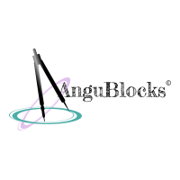
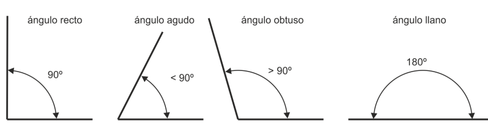

Segmento


=>Geometría Analítica: es el estudio y representación de los elementos y figuras geométricas mediante expresiones numéricas y algebraicas en un sistema de coordenadas o plano cartesiano. Permite la representación de figuras a través de fórmulas. Este tipo de geometría se aplica, por ejemplo, en la Física para representar elementos como los vectores en un sistema de coordenadas.
=>Geometría Descriptiva es el estudio y representación gráfica de las figuras a través de la proyección ortogonal en un plano. Permite identificar y analizar las propiedades geométricas y la relación espacial de las figuras. Los elementos geométricos que la forman son el punto, la línea, el plano y el volumen.
Postulados y Axioma
Angulos
